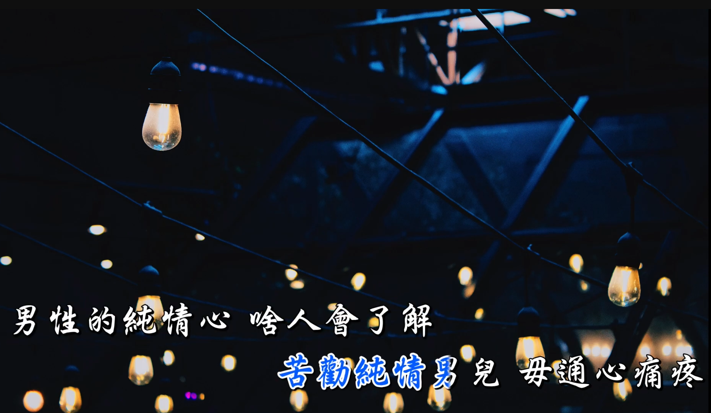
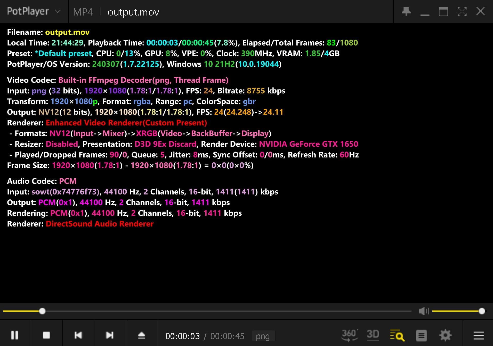
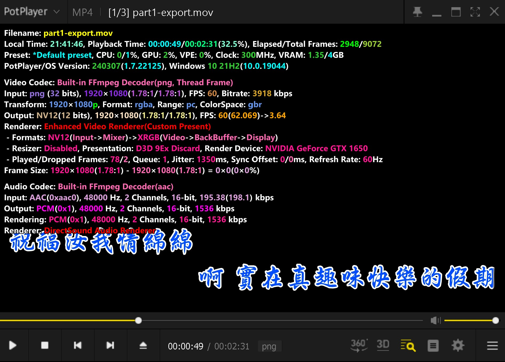
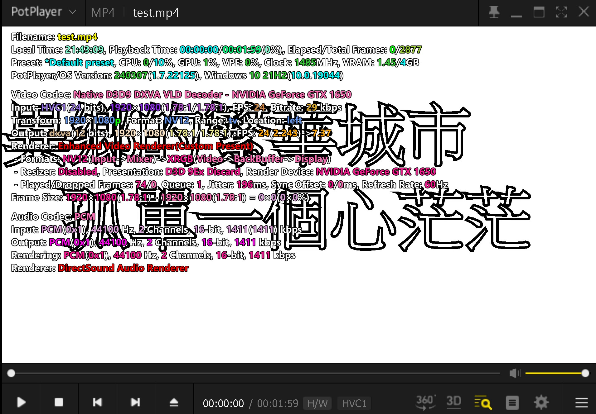

Transparency
A video with an alpha channel is convenient when we’re doing some clip editing. For me, I’d like to use that for karaoke videos, which has a karaoke animation video source on the top layer, and the background images on the bottom layer. When we overlay them in editing software, it’d look like this:

Things about video codecs
Only some special video codecs support alpha channels. The most used are:
| Codecs | The pixel format that includes alpha | Available Containers | Supported by PowerDirector |
|---|---|---|---|
| ffv1 (FFmpeg video codec #1) | bgra | AVI, MKV, MOV, NUT, … | ❌ |
| qtrle (QuickTime Animation (RLE) video) | argb | MOV | ❌ |
| PNG | rgba | MOV | ✅ |
Above is the information I got on the Internet, not sure if there are more available containers, but the MOV is tested and is sure to work. (find more info here)
To see what pixel formats a codec supports with ffmpeg, run this command: (for the qtrle case)
ffmpeg -h encoder=qtrleI’m using PowerDirector as the editing software, and it doesn’t support the ffv1 and qtrle transparent videos. After my test, it seems like PowerDirector only supports the PNG codec.
PNG?
Yes, PNG could be a video codec. Unlike others, PNG codec simply stores every single frame’s data without compression, which makes the file size huge compared to common codecs like h.265.
Implementation
Let’s output a video with a PNG codec and MOV format using the FFmpegFrameRecorder in JavaCV, and I’ll show you how to do it with Java BufferedImage.
Other codecs can be applied easily, just be careful to use the corresponding pixel formats. (Only the essential part of the code displayed here.)
// Setup a converter for coverting a buffered image to the accepted Frame format.
Java2DFrameConverter java2DFrameConverter = new Java2DFrameConverter();
// Setup the buffered image you want to record.
BufferedImage bufferedImage = new BufferedImage(w, h, BufferedImage.TYPE_INT_ARGB);
// Draw something on the buffered image.
Graphics2D imgG2d = (Graphics2D) bufferedImage.getGraphics();
imgG2d.fillRect(...);
// Setup the frame recorder.
FFmpegFrameRecorder frameRecorder = new FFmpegFrameRecorder(...);
frameRecorder.setFrameRate(...);
frameRecorder.setVideoBitrate(...);
frameRecorder.setVideoCodec(avcodec.AV_CODEC_ID_PNG);
frameRecorder.setPixelFormat(avutil.AV_PIX_FMT_RGBA);
frameRecorder.setFormat("mov");
try {
frameRecorder.start();
for(...){
Frame frame = java2DFrameConverter.getFrame(bufferedImage);
frameRecorder.record(frame, AV_PIX_FMT_ARGB);
}
} catch(...) {
...
}
frameRecorder.close();It’s done. You can now output your own transparent videos!
Here are screenshots of comparison of our outputted video vs. Sayatoo’s vs. H265 common. # Our Format

Sayatoo’s Format

H265 Common Format

Why I wrote this post?
I am working on a karaoke software project, being confused about exporting a transparent video. In the end, I referenced the Sayatoo, the commercial karaoke software and found that it strangely used PNG as its video input. After a lot of attempts and I finally found that you have to use PNG codec for transparent videos, so that PowerDirector can recognize it.